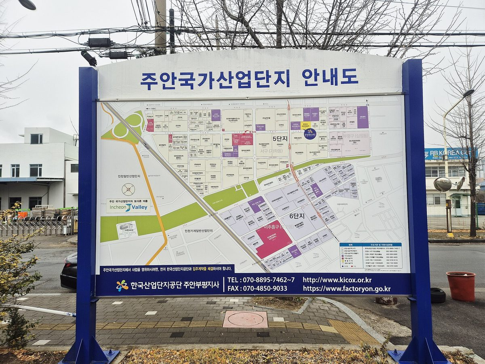

인천 주안·부평산단, 정부 에너지자급자족 인프라 공모 선정…공장 지붕·주차장에 태양광 10MW

2029년까지 국비 200억 원 포함 320억 원 투입해 연 1만2,400MWh 생산 계획…발전 수익으로 '햇빛소득 기금' 11억 원 만들어 입주기업·근로자에 돌려준다는 구상
인천 주안·부평 스마트그린산단이 산업통상부의 '에너지자급자족 인프라 구축사업' 공모에 뽑혀, 공장 지붕과 주차장 같은 산단 안 빈 공간에 태양광 발전설비를 10MW 이상(시 계획) 들인다고 인천시가 26일 밝혔다. 사업 기간은 이달부터 2029년 12월까지로 국비 200억 원을 포함해 모두 320억 원이 들어가며, 주안·부평산단을 중심에 두고 뷰티풀파크와 인천지방산단, 인천기계산단까지 한데 묶는다. 시는 약 10만㎡ 넓이의 설비에서 해마다 1만2,400MWh(시 추산 약 3,500가구의 1년 사용량)를 생산하고, 통합 에너지관리시스템과 직류(DC) 전력망도 깔아 입주기업 전기요금을 연간 약 10억 원 줄이고 RE100 이행을 돕겠다는 목표를 내놨다. 발전 수익은 이른바 '산단 햇빛소득 모델'로 나눌 계획으로, 햇빛소득 기금 11억 원을 만들어 주차 환경과 근로자 편의시설 개선 같은 기업·근로자 환원사업에 쓰고 22억 원은 발전설비에 다시 투자한다는 구상이다. 사업은 한국산업단지공단이 전담하고 인천테크노파크가 주관하며, 비엠이·에이치비아이가 참여한 발전 특수목적법인(SPC)과 KT·래플러스·유호스트 등이 컨소시엄을 꾸렸는데, 상반기 공모에서 떨어진 뒤 컨소시엄과 사업계획을 고쳐 8~9월 재공고에 다시 낸 끝에 선정됐다. 박찬대 인천시장은 산단의 유휴공간을 발전소로 바꿔 "기업과 근로자, 지역이 함께 이익을 나누는" 산단을 만들겠다고 말했다.
시민에너지 관점
전기요금 연 10억 원 절감과 11억 원 기금이라는 계획은 공장 지붕 하나하나가 비용을 줄이는 데서 그치지 않고 산단에서 일하는 사람들의 몫까지 만들어 낼 수 있음을 보여 준다. 노후 산단의 입주기업이 남의 발전설비에 지붕을 선뜻 내주겠느냐는 우려가 있지만, 지붕을 내준 기업과 그곳에서 일하는 근로자가 발전소의 주주가 되면 설비를 받아들일 이유는 훨씬 분명해진다. 일본 가나가와현 오다와라시에서는 2011년 원전사고 뒤 지역 기업들이 함께 출자해 '호토쿠에너지'를 세우고 시민 출자까지 모아 태양광 발전소를 지어, 산업계와 주민이 지역 발전소의 주인이 되는 길을 보여 줬다. 인천시와 컨소시엄은 기금의 운영 기준과 배분 내역을 공개하는 데서 나아가, 입주기업과 근로자가 출자로 발전 법인에 참여할 수 있는 몫을 사업 설계 단계에서 열어 두어야 한다.
출처: 쓰담미디어 2026-10-26 박신숙 원문 보기
仁川・朱安・富平産業団地、政府のエネルギー自給自足インフラ公募に選定…工場の屋根や駐車場に太陽光10MW
2029年までに国費200億ウォンを含む320億ウォンを投じ年1万2,400MWhを発電する計画…発電収益で「日差し所得基金」11億ウォンをつくり入居企業・労働者に還元する構想
仁川市は26日、朱安・富平スマートグリーン産業団地が産業通商部の「エネルギー自給自足インフラ構築事業」の公募に選ばれ、工場の屋根や駐車場など団地内の使われていない空間に太陽光発電設備を10MW以上（市の計画）設けると明らかにした。事業期間は今月から2029年12月までで、国費200億ウォンを含め計320億ウォンを投じ、朱安・富平産業団地を中心にビューティフルパーク、仁川地方産業団地、仁川機械産業団地もあわせて対象とする。市は約10万㎡の設備で年1万2,400MWh（市の試算で約3,500世帯の1年分の使用量）を発電し、統合エネルギー管理システムと直流（DC）電力網も整えて、入居企業の電気料金を年間約10億ウォン削減し、RE100の達成を支援するとの目標を示した。発電収益はいわゆる「産業団地日差し所得モデル」で分け合う計画で、日差し所得基金11億ウォンをつくって駐車環境や労働者の福利施設の改善など企業・労働者向けの還元事業に充て、22億ウォンは発電設備に再投資する構想だ。事業は韓国産業団地公団が担当し仁川テクノパークが主管し、ビーエムイー・エイチビーアイが参加する発電特別目的会社（SPC）とKT・レプラス・ユーホストなどがコンソーシアムを組んだ。上半期の公募で落選した後、コンソーシアムと事業計画を見直して8～9月の再公募に改めて応募し、選定された。朴賛大（パク・チャンデ）仁川市長は、団地の遊休空間を発電所に変え「企業と労働者、地域がともに利益を分かち合う」産業団地をつくると述べた。
市民エネルギーの視点
電気料金の年10億ウォン削減と11億ウォンの基金という計画は、工場の屋根一つひとつがコスト削減にとどまらず、団地で働く人々の取り分まで生み出しうることを示している。老朽化した団地の入居企業が他人の発電設備のために屋根をすんなり貸すだろうかという懸念もあるが、屋根を貸す企業とそこで働く労働者が発電所の株主になれば、設備を受け入れる理由ははるかに明確になる。神奈川県小田原市では2011年の原発事故の後、地元企業が共同出資して「ほうとくエネルギー」を設立し、市民からの出資も集めて太陽光発電所を建て、産業界と住民が地域の発電所の持ち主になる道を示した。仁川市とコンソーシアムは基金の運営基準と配分の内訳を公開するにとどまらず、入居企業と労働者が出資によって発電法人に参加できる枠を事業設計の段階から設けるべきだ。
出典: Sseudam Media 2026-10-26 Park Sin-suk 原文を読む
仁川朱安·富平产业园区入选政府能源自给自足基础设施公募…在工厂屋顶和停车场建设10MW光伏
计划到2029年投入含国费200亿韩元在内的320亿韩元，年发电1万2,400MWh…以发电收益设立11亿韩元"阳光收入基金"回馈入驻企业和劳动者
仁川市26日宣布，朱安·富平智慧绿色产业园区入选产业通商部"能源自给自足基础设施建设项目"公募，将在工厂屋顶和停车场等园区内闲置空间建设10MW以上的光伏发电设施（市政府计划）。项目期限为本月至2029年12月，总投资320亿韩元，其中国费200亿韩元，以朱安·富平产业园区为中心，并将美丽公园（Beautiful Park）、仁川地方产业园区和仁川机械产业园区一并纳入。市政府提出的目标是，利用约10万平方米的设施每年发电1万2,400MWh（据市政府估算约相当于3,500户家庭一年的用电量），同时建设综合能源管理系统和直流（DC）电网，使入驻企业的电费每年减少约10亿韩元，并支持企业履行RE100。发电收益计划以所谓"产业园区阳光收入模式"分配：设立11亿韩元的阳光收入基金，用于改善停车环境和劳动者便利设施等面向企业和劳动者的回馈项目，另将22亿韩元再投资于发电设施。项目由韩国产业园区公团负责、仁川科技园主管，由BME、HBI参与的发电特殊目的法人（SPC）与KT、Raplus、Uhost等组成联合体；该联合体在上半年公募落选后调整了联合体构成和项目计划，在8～9月的再次公告中重新申报并获选。仁川市长朴赞大表示，要把园区的闲置空间变成发电站，打造"企业、劳动者和地区共同分享利益"的产业园区。
市民能源视角
每年节省10亿韩元电费、设立11亿韩元基金的计划表明，一块块工厂屋顶不仅能降低成本，还能为在园区工作的人创造收益份额。有人担心老旧园区的入驻企业未必愿意把屋顶借给别人的发电设施，但如果出借屋顶的企业和在那里工作的劳动者成为发电站的股东，接受设施的理由就会清楚得多。日本神奈川县小田原市在2011年核事故后，由当地企业共同出资成立"报德能源"（ほうとくエネルギー），并募集市民出资建设光伏电站，展示了产业界和居民成为地方电站主人的道路。仁川市和联合体不应止于公开基金的运营标准和分配明细，还应在项目设计阶段就为入驻企业和劳动者留出以出资参与发电法人的份额。
来源: Sseudam Media 2026-10-26 Park Sin-suk 查看原文
Incheon's Juan and Bupyeong industrial complexes win government energy self-sufficiency grant to put 10MW of solar on factory roofs and car parks
32 billion won including 20 billion won in state funds to be spent by 2029 for a planned 12,400MWh a year; a 1.1 billion won "sunlight income fund" from power revenue is to go back to tenant companies and workers
The Juan-Bupyeong Smart Green Industrial Complex in Incheon has been selected for the Ministry of Trade and Industry's "energy self-sufficiency infrastructure" programme and will install at least 10MW of solar panels (according to the city's plan) on idle spaces such as factory roofs and car parks, Incheon City said on the 26th. The project runs from this month to December 2029 at a total cost of 32 billion won, including 20 billion won in state funds, and centres on the Juan and Bupyeong complexes while also taking in Beautiful Park, the Incheon local industrial complex and the Incheon machinery industrial complex. The city aims to generate 12,400MWh a year from about 100,000㎡ of panels (equal to the annual use of about 3,500 households, by the city's estimate) and to build an integrated energy management system and a direct-current (DC) grid, with the goal of cutting tenant companies' electricity bills by about 1 billion won a year and helping them meet RE100 commitments. Power revenue is to be shared under what is described as an "industrial-complex sunlight income model": a 1.1 billion won sunlight income fund would pay for programmes for companies and workers, such as better parking and worker amenities, while 2.2 billion won would be reinvested in the generating equipment. The Korea Industrial Complex Corporation is in charge and Incheon Technopark is leading the project, with a consortium of a power special purpose company (SPC) involving BME and HBI plus KT, Raplus, Uhost and others; the bid was chosen after failing in the first-half round and being resubmitted in the August–September re-tender with a reorganised consortium and a revised plan. Incheon Mayor Park Chan-dae said the city would turn idle spaces in the complex into power plants to create an industrial park where "companies, workers and the region share the benefits together."
Citizen Energy View
A planned 1 billion won a year in lower power bills and a 1.1 billion won fund show that factory roofs can do more than cut costs: they can create a share for the people who work in the complex. Some worry that tenants in an ageing complex will be reluctant to lend their roofs to someone else's generating equipment, but if the companies providing the roofs and the workers inside become shareholders in the plant, the reason to accept it becomes far clearer. In Odawara, Kanagawa Prefecture, Japan, local companies jointly founded Hōtoku Energy after the 2011 nuclear accident and raised investment from citizens to build solar plants, showing how local business and residents can become owners of local power stations. Incheon and the consortium should go beyond publishing the fund's rules and payouts and, at the design stage, reserve a share that tenant companies and workers can buy into in the generating company.
Source: Sseudam Media 2026-10-26 Park Sin-suk Read the original